Практичний досвід · журнал «ДентАрт» 2020 №4
Естетична реабілітація зубів, змінених у кольорі
Aesthetic Rehabilitation of Discolored Teeth
На повсякденному клінічному прийомі лікаря-стоматолога лікування зубів, змінених у кольорі, посідає особливе місце, а якщо виникає потреба естетичної реабілітації у фронтальній ділянці, проблема постає особливо гостро.
Етіологічних чинників зміни кольору зуба досить багато: посттравматичні, карієсогенні, ятрогенні, прийом лікарських препаратів у період одонтогенезу, підвищений вміст фтору в питній воді, порушення білкового та мінерального обміну речовин.
З клінічної точки зору уваги заслуговують ятрогенні причини. Некоректне ортодонтичне лікування, перегрівання пульпи при ортопедичних втручаннях, розгерметизація реставрації, неефективна обтурація кореневих каналів, використання резорцин-формалінового методу при лікуванні каналів зубів, застосування срібних штифтів, амальгами, йодоформу і комбінація всього перерахованого може створювати передумови до дисколориту зубів. Також на колір зубів впливають різні харчові барвники, пігменти тютюнових і кальянних виробів. У комплексі все це може призводити до варіабельності відтінків: від сірого до найчорніших, з відтінком жовтизни і до коричневого, часто зустрічаються рожево-червоні тони.
У цій статті ми розглянемо естетичну реабілітацію девітального зуба. При лікуванні таких зубів доводиться стикатися з безліччю клінічних завдань.
Відомі такі популярні методики для відбілювання девітальних зубів, як методика інтенсивного відбілювання (power bleaching) і методика поступового відбілювання (walking bleach). У першому випадку відбілююча речовина вноситься й активується безпосередньо в клінічних умовах під контролем лікаря, і пацієнт бачить динаміку відразу (за необхідності процедуру повторюють під час цього ж візиту), у другому випадку відбілюючий препарат залишають у зубі від двох днів до тижня (за потреби повторюють), динаміка відбілювання розтягнута в часі.
Вашій увазі пропонується докладний алгоритм вирішення проблеми на прикладі лікування пацієнта із застосуванням методики поступового відбілювання (walking bleach).
Загальна схема лікування
Візит перший
- Визначення кольору і фотопротоколювання.
- Ізоляція робочого поля рабердамом.
- Заміна реставрацій класу III і IV за Блеком.
- Повторне ендодонтичне лікування.
- Контрольні рентгензнімки.
- Ізоляція кореневого каналу.
- Закладання відбілюючої речовини.
- Тимчасова пломба.
Візит другий (через 1-2 дні)
- Огляд і аналіз динаміки відбілювання.
- Фотопротоколювання поточного результату.
Візит третій
- Видалення відбілюючої речовини.
- Реставрація зуба.
Клінічний приклад
Анамнез: 36-річна пацієнтка звернулася з побажанням замінити пломби в передніх зубах, зроблені приблизно 10-12 років тому. Останні 2 роки відзначає погіршення кольору переднього зуба. Зуби на подразники не реагують.
Діагностика: огляд, перкусія передніх зубів і пальпація м’яких тканин у зоні проєкції верхівок коренів безболісні, реакція на холод негативна. З додаткових методів обстеження була використана ортопантомограма, завчасно зроблена до відвідування у зв’язку з проживанням в іншому місті.
Діагноз: Хронічний середній карієс зубів 12, 21, 22. Вторинний глибокий карієс девітального зуба 11, зміна кольору зуба внаслідок використання резорцин-формалінової пасти (рожево-сірий дисколорит).
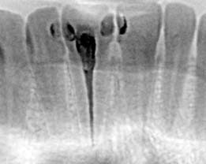
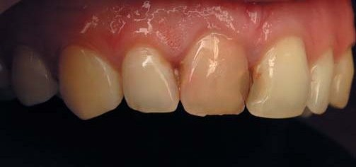
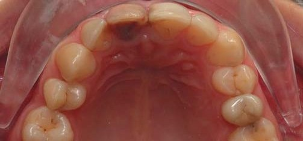
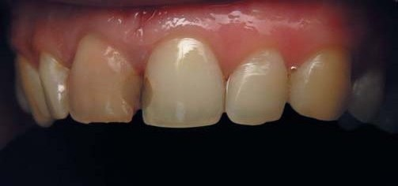
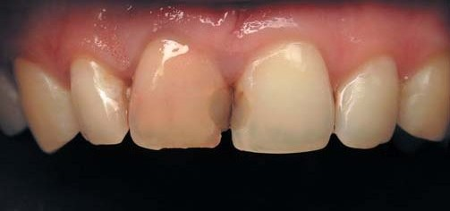
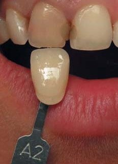
Лікування. Візит перший
Під інфільтраційною анестезією робоче поле ізольовано системою рабердам. Препарування зубів 12, 11, 21 зроблено в межах пломб і прилеглих каріозних дефектів. Протравлювання кислотним гелем Phospho-Jen AS (JenD), адгезивна підготовка Prime & Bond Universal (Dentsply Sirona). Згідно з топографією було виконано побудову мезіальної стінки зуба 12 і мезіальної стінки зуба 21: внутрішній шар — матеріал CERAM.X Sphere TEC one (Dentsply Sirona) відтінок A2, зовнішній шар — Esthet X HD відтінок YE (Dentsply Sirona). Також відновлено зуб 11 з дисколоритом: мезіальна і дистальна стінки зуба — основна емаль виконана матеріалом CERAM.X Sphere TEC one відтінок A2, поверхнева емаль — Esthet X HD відтінок YE (Dentsply Sirona).
Під час цього ж візиту проведене повторне ендодонтичне лікування з інструментацією кореневого каналу WaveOne Gold Large з подальшим використанням обтуратора GuttaCore (Dentsply Sirona). Як силер використано AH Plus (Dentsply Sirona). Етапи ендодонтичного лікування відображені на трьох послідовних прицільних рентгензнімках.
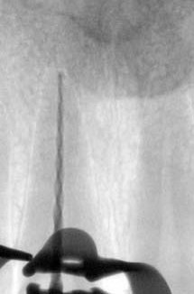
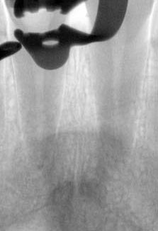
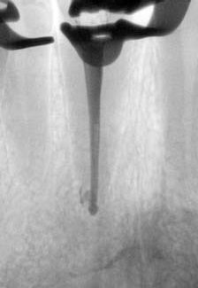
Протокол процесу лікування
Було видалено надлишки гутаперчі і залишки AH Plus у зоні устя.
Зроблене ретельне протравлювання 37 % кислотним гелем Phospho-Jen AS (JenD) 30-60 с і промивання водоповітряним струменем. На висушену поверхню нанесли самопротравлюючий адгезив Prime & Bond Universal (Dentsply Sirona) з експозицією 30 с. Плівка була розподілена струменем повітря до рівномірного шару, зроблено полімеризацію протягом 10 с і внесено ізоляційний шар матеріалу SDR Plus товщиною 2-3 мм, полімеризація протягом 20 с.
Далі була проведена медикаментозна обробка камери для відбілювання 18 % розчином ЕДТА 3-4 хвилини (за таймером), внесений Opalescence Endo 35 % і ватною кулькою заповнений об’єм камери для відбілювання на 80 % (резерв місця для тимчасової пломби).
Тимчасова пломба в 2 шари (за типом сендвіч-техніки): перший шар — оксидентин, який не дає затікати текучому композиту на емаль, що потребує відбілювання, далі на оксидентин і периметр емалі навколо отвору нанесено адгезив Prime & Bond Universal (Dentsply Sirona), полімеризація 10 секунд. Другий шар — текучий матеріал Latelux Flow/Latus, фінішна полімеризація 20 с.
Після зняття рабердаму зроблено корекцію реставрованих зубів по оклюзії.
Візит другий (через 24 години)
Цей візит потрібний для контролю над процесом. Ми знаємо, що крім відбілювача, на колір зубів дуже сильно впливає робота з рабердамом. Зуби недостовірно проявляють свій колір від кількох годин до кількох діб. Це визначається різними факторами та обставинами. Головні з них — об’єм і площа поверхні, що реставрується, по відношенню до здорових тканин, індивідуальна особливість поверхневої емалі. Для правильної оцінки процесу відбілювання та усунення впливу ефекту пересушених зубів від рабердаму під час першого візиту для контролю в ізоляції використовується симетричний зуб, навіть якщо він практично не бере участі в роботі. Під час цього візиту було проведено фотографування у стандартних ракурсах.
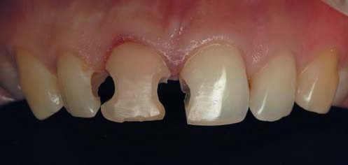
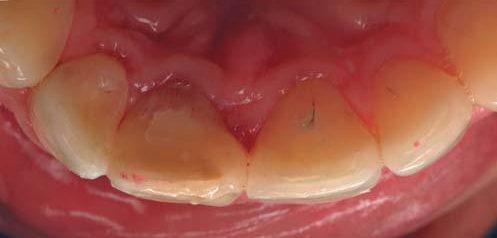
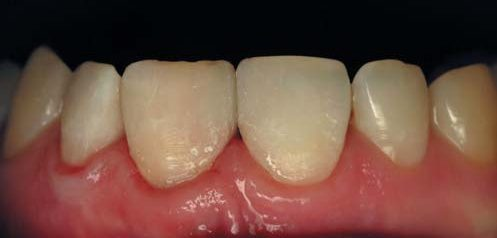
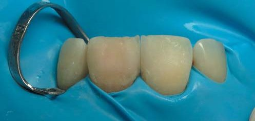
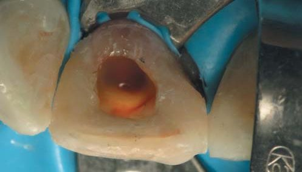
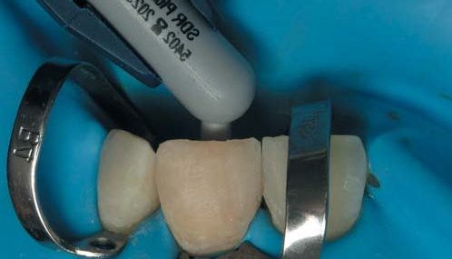
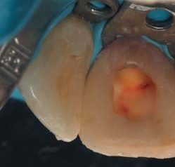
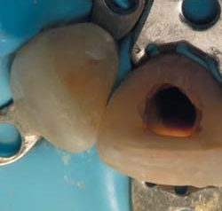
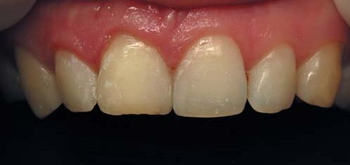
Візит третій (через 48 годин)
Під інфільтраційною анестезією зроблено ізоляцію, видалено тимчасову пломбу з відбілюючою речовиною і ватною кулькою. Ретельне промивання, протравлювання кислотним гелем Phospho-Jen AS (JenD) (30-60 с) і змивання водою.
Виконана реставрація внутрішньої частини зуба в біоміметичній концепції. З урахуванням топографії будови цього зуба передню третину камери заповнили основною емаллю CERAM.X Sphere TEC one відтінок A2, внутрішню і задню третини відбілюючої камери — ядро реставрації — Esthet X HD відтінок WO, у зоні сліпої ямки основну емаль імітує SDR Plus відтінок A2, поверхнева емаль Esthet X HD відтінок YE.
У зв’язку з несиметричною позицією передніх поверхонь зубів 11 і 21 у дузі була додана незначна товщина (0,4-0,6 мм) поверхневої емалі на вестибулярній поверхні зуба 11 матеріалом Esthet X HD відтінок YE.
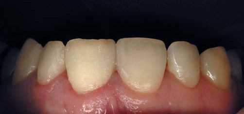
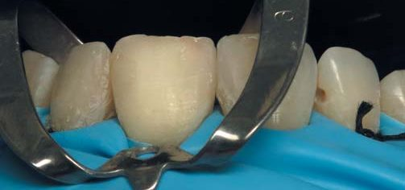
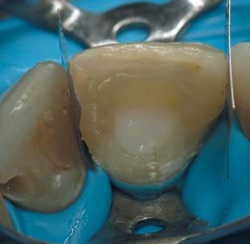
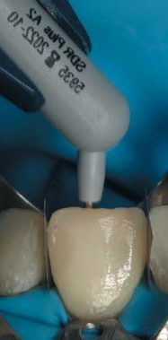
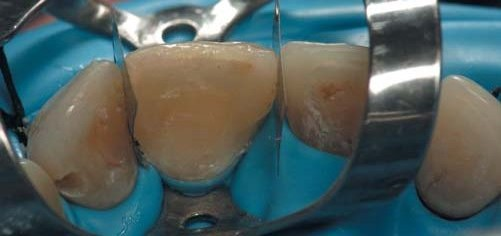
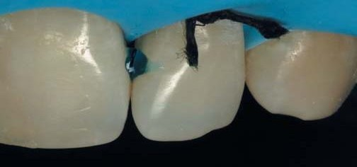
Лікування карієсу дистальної контактної поверхні зуба 12 і карієсу мезіальної контактної поверхні зуба 22 без особливостей: основна емаль CERAM.X Sphere TEC one відтінок A2, поверхнева емаль Esthet X HD відтінок YE.
Шліфування та полірування зубів 12, 11, 21, 22 зроблено за стандартним протоколом з використанням фінішної системи Enhance: за допомогою шліфувальних головок Enhance і полірувальних паст Prisma Gloss Fine/Prisma Gloss Extrafine.
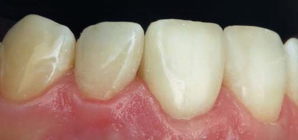
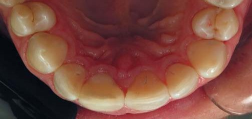
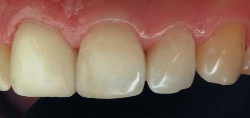
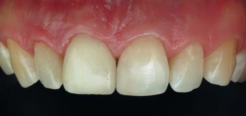
Висновки
Естетичні вимоги пацієнтів на прийомі у лікаря-стоматолога надзвичайно високі, що змушує підходити до лікування комплексно, вдумливо і обґрунтовано, особливо в складних клінічних випадках.